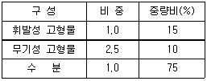
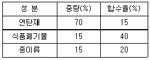
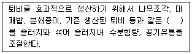
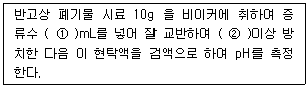
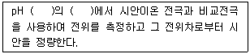
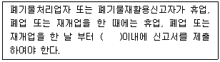

폐기물처리산업기사 (2004-05-23 기출문제)
1과목: 폐기물개론
1. 표와 같은 슬러지의 비중은?

- 0.96
- 1.06
- 1.16
- 1.26
(정답률: 알수없음)

2. 어떤 공장에 배출되는 폐기물의 성상을 분석한 결과 비가연성 물질의 함유율이 75%(무게기준)이었다. 이 폐기물의 밀도가 500kg/m3이라면 20m3에 포함되어 있는 가연성물질의 양은?
- 1,500㎏
- 2,500㎏
- 3,500㎏
- 4,500㎏
(정답률: 알수없음)
3. 새로운 쓰레기 수집방법 중 pipe-line방식에 관한 설명으로 알맞지 않은 것은?
- 쓰레기 발생빈도가 낮아야 현실성이 있다.
- 대형폐기물에 대한 전처리가 필요하다.
- 고도의 시스템 신뢰성이 필요하다.
- 장거리 이용이 곤란하다.
(정답률: 알수없음)
4. 어느 공장에서 배출되는 쓰레기량은 하루 평균 300m3로 그 밀도는 600kg/m3 이었다. 이 쓰레기를 전량 매립한다고 할 때 매립비용은 ton당 1000원이라 하면, 그 공장에서 납입하여야 할 년간 매립비용은? (단, 공장가동일은 월평균 25일로 함)
- 2,400만원
- 3,600만원
- 4,600만원
- 5,400만원
(정답률: 알수없음)
5. 1992년 리우데자네이로에서 가진 유엔환경개발회의에서 도입된 용어(약자)로 [친환경적이면서 지속 가능한 개발] 이란 뜻을 가진 것은?
- EST
- ESSD
- 4-E
- POHC
(정답률: 알수없음)
6. 쓰레기 가연분의 화학적 성분분석 항목을 측정하기 위해 CHNOS 자동 원소 분석장치로 사용할 경우, 동시 분석되지 않고 연소관, 환원관 및 흡수관의 충진물을 교환하므로써 분석이 가능한 항목은?
- 탄소
- 수소
- 질소
- 산소
(정답률: 알수없음)
7. 채취한 쓰레기의 분석절차를 알맞게 나타낸 것은?
- 시료-분류-밀도측정-물리적조성-전처리-조성분석
- 시료-물리적조성-분류-전처리-밀도측정-조성분석
- 시료-전처리-밀도측정-분류-물리적조성-조성분석
- 시료-밀도측정-물리적조성-분류-전처리-조성분석
(정답률: 알수없음)
8. 다음에서 현재 우리나라의 생활폐기물중 가장 많이 발생되는 것은?
- 종이류
- 음식쓰레기류
- 플라스틱류
- 섬유류
(정답률: 알수없음)
9. 폐기물 파쇄시 작용하는 힘과 가장 거리가 먼 것은?
- 충격 작용력
- 압축 작용력
- 인장 작용력
- 전단 작용력
(정답률: 알수없음)
10. 점토가 매립지의 차수막으로 적합하기 위해서는 투수계수가 몇 cm/sec미만 이어야 하는가?
- 10-3
- 10-5
- 10-7
- 10-9
(정답률: 알수없음)
11. 어느 도시에서 쓰레기 수거시 수거인부가 1일 3500명이 근무했으며, 수거인부 1인이 1일 8시간, 년간 300일을 근무하고 1톤의 쓰레기를 수거운반하는데 소요된 시간(MHT : man-hour/ton)이 10.7MHT이라면 수거량은 약 얼마인가?
- 500,000t/년
- 658,000t/년
- 785,000t/년
- 854,000t/년
(정답률: 알수없음)
12. 현재 우리나라에서 발생되는 생활폐기물의 처리방법 중 가장 많이 사용되는 공법은?
- 소각
- 매립
- 노천폐기
- 퇴비화
(정답률: 알수없음)
13. 폐기물의 관리에 있어서 가장 우선적으로 고려하여야 할 사항은?
- 재회수
- 재활용
- 감량화
- 소각
(정답률: 알수없음)
14. 도시 생활쓰레기를 분류하여 다음과 같은 결과를 얻었다. 이 쓰레기의 함수율은?

- 19.5%
- 23%
- 27.5%
- 32%
(정답률: 알수없음)
15. 인구 1,000,000명이고, 1인 1일 쓰레기 배출량은 1.2kg/인-일이라 한다. 쓰레기의 밀도가 600kg/m3 라고 하면 하루 발생된 쓰레기를 처리하기 위하여 적재량 10m3인 트럭의 운반회수는? (단, 트럭 1대 기준)
- 100회
- 130회
- 160회
- 200회
(정답률: 알수없음)
16. 가연분 함량 30%(무게기준)인 어떤 폐기물의 현재 저위발열량이 990kcal/kg이다. 수분함량(무게기준)은? (단, 삼성분의 조성비를 통한 발열량계산 기준)
- 80%
- 60%
- 40%
- 20%
(정답률: 알수없음)
17. 다음 분쇄중 미분쇄를 할 수 있는 분쇄기(미분쇄기)로 가장 적절한 것은?
- jaw crusher
- roll crusher
- hammer mill
- ball mill
(정답률: 알수없음)
18. 다음 중 쓰레기의 발생량 예측에 사용되는 방법과 가장 거리가 먼 것은?
- 경향법(Trend method)
- 물질수지법(Material balance method)
- 다중회귀모델(Multiple regression model)
- 동적모사모델(Dynamic simulation model)
(정답률: 알수없음)
19. 폐기물의 수거노선을 결정할 때의 고려사항으로 적합지 아니한 것은?
- 가능한 한 시계방향으로 수거노선을 정한다.
- 유턴(U-turn) 운행은 피한다.
- 수거의 시작은 차고와 가까운 곳에서 한다.
- 저지대에서 고지대로 상향식으로 운행한다.
(정답률: 알수없음)
20. 쓰레기를 압축시키기 전의 밀도가 0.43t/m3이었던 것을 압축기에 압축시킨 결과 0.83t/m3 으로 증가하였다. 이때 부피의 감소율은?
- 48%
- 54%
- 56%
- 64%
(정답률: 알수없음)
2과목: 폐기물처리기술
21. 해안매립공법 중 '박층 뿌림공법'에 관한 설명으로 틀린 것은?
- 지반안정화에 유리하다.
- 매립효율이 떨어진다.
- 매립부지의 조기이용에 유리하다.
- 설비가 소규모인 매립지에 적합하다.
(정답률: 알수없음)
22. 연직차수막에 대한 설명으로 알맞은 것은?
- 매립전에는 보수가 용이하나 매립후는 불가능하다.
- 차수성 확인이 매립후에도 용이하다.
- 지하수 집배수 시설이 불필요하다.
- 차수막 단위면적당 공사비는 싸지만 총공사비는 비싸다.
(정답률: 알수없음)
23. 차수시설인 연직차수막의 종류 중 'Earth Dam의 코아'에 관한 설명으로 틀린 것은?
- 재료는 코아용 불투수성 토양이 사용된다.
- 지반투수층이 두꺼울 때 유효하며 얕을 때는 사용이 어렵다.
- 재료의 내구성은 무기질로서 내구성이 좋다.
- 시공은 투수층을 불투수층까지 제거 후 기초처리를 한 다음 코아용 토양을 묻고 압축한다.
(정답률: 알수없음)
24. 메탄올(CH3OH) 4kg이 연소하는데 필요한 이론공기량은?
- 20 Sm3/kg
- 28 Sm3/kg
- 33 Sm3/kg
- 39 Sm3/kg
(정답률: 알수없음)
25. 소각로 중 다단로방식에 장점으로 틀린 것은?
- 연소가 완만하고 취급이 용이하다.
- 혼합소각에 적당하다.
- 온도제어가 용이하고 조작이 쉽다.
- 분진발생이 적다.
(정답률: 알수없음)
26. 쓰레기 소각로에서 로의 열부하가 50,000Kcal/m3-hr 이며 쓰레기의 저위발열량 600Kcal/Kg, 쓰레기중량 10,000Kg 이다. 로의 용량은? (단, 8시간 가동한다.)
- 10m3
- 15m3
- 20m3
- 25m3
(정답률: 알수없음)
27. 다음과 같은 조성의 쓰레기를 소각처분하고자 할 때 이론적으로 필요한 공기의 양은 표준상태에서 쓰레기 1Kg당 얼마인가? (단, 쓰레기 조성 탄소(C) : 9.5%(질량%), 수소(H) : 2.8%(질량%), 산소(O) : 10.5%(질량%), 불연소성분 : 77.2%(질량%))
- 약 1.25m3
- 약 2.25m3
- 약 3.25m3
- 약 4.25m3
(정답률: 알수없음)
28. 360㎘/d 처리장에 투입구의 소요개수는? (단, 수거차량 1.8㎘/대, 자동차 1대 투입시간 10min, 자동차 1대 작업시간 8hr 이고, 안전율은 1.2이다)
- 7개
- 6개
- 5개
- 4개
(정답률: 알수없음)
29. 배연탈황시 발생된 슬러지처리에 많이 쓰이는 고형화 처리법은?
- 시멘트 기초법
- 석회 기초법
- 자가 시멘트법
- 열가소성 플라스틱법
(정답률: 알수없음)
30. 총고형물이 30,000g/m3인 폐기물 100m3의 매립시 이중휘발성 고형물이 60%(w/w%)이었다면 CH4 발생량은? (단, CH4 발생량은 VS 1㎏당 0.5m3이다)
- 600m3
- 700m3
- 800m3
- 900m3
(정답률: 알수없음)
31. 습식 고온산화에 의한 분뇨처리 구성기기와 가장 거리가 먼 것은?
- 고압펌프
- 여과장치
- 열교환기
- 기액분리기
(정답률: 알수없음)
32. 다이옥신 방출을 최소한으로 하기 위하여 일반적으로 가장 많이 사용하는 집진설비는?
- 원심력집진기
- 전기집진기
- 세정집진지
- 백필터집진기
(정답률: 알수없음)
33. 슬러지의 탈수 가능성을 일반적으로 표현하는 용어는?
- 균등계수
- 투수계수
- 유효입경
- 여과비저항
(정답률: 알수없음)
34. 점토가 차수막으로 적합하기 위한 포괄적 조건으로 가장 거리가 먼 것은?
- 자갈함유량 : 10% 미만
- 투수계수 : 10-7cm/sec 미만
- 점토 및 미사토함유량 : 20% 이상
- 액성한계 : 20% 이하
(정답률: 알수없음)
35. 전과정평가(LCA)는 4부분으로 구성되어진다. 이에 속하지 않는 것은?
- 목록분석
- 영향평가
- 지속보전평가
- 목적 및 범위설정
(정답률: 알수없음)
36. ( )안에 알맞는 내용은?

- Composting Agent
- Composting Conditioner
- Bulking Agent
- Decomposition Agent
(정답률: 알수없음)
37. 건조된 고형분의 비중이 1.28이며, 건조 이전의 고형분 함량이 41 %일 때 건조전 슬러지 케익의 비중은?
- 0.999
- 1.099
- 1.199
- 1.299
(정답률: 알수없음)
38. 다음 중 폐기물 매립지에 대한 사후관리로 실시하는 불포화층 검사의 목적으로 가장 알맞는 것은?
- 차수설비에 이상유무를 사전에 파악
- 부동침하가 진행 중인지 파악
- 가스화가 계속 진행 중인지 파악
- 침출수의 수질 상태를 파악
(정답률: 알수없음)
39. 유해폐기물의 처리기술 중 유기성고형화에 관한 설명으로 틀린 것은?
- 처리비용이 고가이다.
- 최종고화체의 체적 증가가 다양하다.
- 수밀성이 매우크며 다양한 폐기물에 적용이 가능하다.
- 상업화된 처리법의 현장자료가 다양하다.
(정답률: 알수없음)
40. 폐기물 매립지의 침출수 처리에 많이 사용되는 펜톤산화제의 조성으로 알맞는 것은?
- 과산화수소 + 철염
- 과산화수소 + 저장안정제
- 오존 + 철염
- 오존 + 저장안정제
(정답률: 알수없음)
3과목: 폐기물 공정시험 기준(방법)
41. Pb(NO3)2를 사용하여 5mg/mL의 납표준원액 100mL를 제조하려고 한다. Pb(NO3)2를 얼마나 취해야 하는가? (단, 원자량은 Pb : 207.2, N : 14, O : 16 이다.)
- 650.1mg
- 312.8mg
- 498.4mg
- 799.2mg
(정답률: 알수없음)
42. 정량범위라함은 시험방법에 따라 시험하였을 경우 표준편차율 몇 %이하에서 측정할 수 있는 정량하한과 정량상한을 말하는가?
- 1
- 10
- 15
- 20
(정답률: 알수없음)
43. 폐기물공정시험방법에 사용되는 용어설명 및 일반적 총칙에 관한 내용으로 알맞지 않는 것은?
- 가스체의 농도는 표준상태(0℃, 1기압, 상대습도 0%)로 환산 표시한다.
- 시험에 사용하는 물은 따로 규정이 없는 한 정제수 또는 탈염수를 말한다.
- '냄새가 없다'라고 기재한 것은 냄새가 없거나, 또는 거의 없는 것을 표시하는 것이다.
- '정확히 취하여'라 하는 것은 규정한 양의 검체를 0.1mg까지 달아 정확히 취하는 것을 말한다.
(정답률: 알수없음)
44. 폐기물 운반용 차량에 적재된 폐기물 중에서 시료를 채취하고자 한다. 시료채취기준을 가장 바르게 설명된 것은?
- 5톤 미만 차량 적재시 적재 폐기물을 평면상에서 4등분 한 후 각 등분마다 시료 채취
- 5톤 이상 차량 적재시 적재 폐기물을 평면상에서 9등분 한 후 각 등분마다 시료채취
- 10톤 미만 차량 적재시 적재 폐기물을 평면상에서 6등분 한 후 각 등분마다 시료 채취
- 10톤 이상 차량 적재시 적재 폐기물을 평면상에서 12등분 한 후 각 등분마다 시료 채취
(정답률: 알수없음)
45. 원자흡광광도법에 의한 카드뮴 정량에 관한 설명으로 알맞지 않는 것은?
- 시료중에 알칼리금속의 할로겐 화합물이 다량 함유할 경우에는 추출법으로 카드뮴을 분리한다.
- 사용램프는 카드뮴중공음극램프를 사용한다.
- 가연성가스는 아세틸렌, 조연성가스는 공기를 사용한다.
- 파장은 583.3nm에서 측정한다.
(정답률: 알수없음)
46. 흡광광도법에 의한 크롬의 측정방법은?
- 중량법
- 디티존법
- 디페닐카르바지드법
- 디에틸디티오카르바민산법
(정답률: 알수없음)
47. 유기물 함량이 높지 않고 금속의 수산화물, 산화물, 황화물을 함유한 시료에 적용하는 유기물 분해방법은?
- 질산 - 염산에 의한 분해
- 회화에 의한 분해
- 질산에 의한 분해
- 질산 - 황산에 의한 분해
(정답률: 알수없음)
48. pH 표준액의 종류가 아닌 것은?
- 수산염 표준액
- 붕산염 표준액
- 프탈산염 표준액
- 수산화칼륨 표준액
(정답률: 알수없음)
49. 반고상 또는 고상폐기물내의 기름성분을 분석하기 위해 노말헥산 추출시험방법에 의해 폐기물 양에 약 2.5배에 해당하는 물을 넣고 잘 혼합한 후 pH를 조절한다. 이때 pH의 범위는?
- pH 4이하
- pH 4∼7
- pH 7∼9
- pH 9이상
(정답률: 알수없음)
50. 액체시약의 농도에 있어서 황산(1＋10)라고 되어 있을 경우 옳은 것은?
- 물 1㎖와 황산 10㎖를 혼합하여 조제한 것
- 황산 1㎖와 물 9㎖를 혼합하여 조제한 것
- 물 1㎖와 황산 9㎖를 혼합하여 조제한 것
- 황산 1㎖와 물 10㎖를 혼합하여 조제한 것
(정답률: 알수없음)
51. 이온전극법의 특징에 관한 내용으로 틀린 것은?
- 이온농도의 측정범위는 일반적으로 10-3 mol/L ∼ 10-8 mol/L(또는 10-7 mol/L)이다.
- 이온전극의 종류나 구조에 따라서 사용 가능한 pH의 범위가 있기 때문에 주의하여야 한다.
- 측정용액 온도가 10℃ 상승하면 전위구배가 1가 이온은 약 2㎷, 2가 이온은 약 1㎷ 변화한다.
- 시료용액의 교반은 측정에 방해되지 않는 범위내에서 세게 일정한 속도로 하여야 한다.
(정답률: 알수없음)
52. ( )안에 알맞는 내용은?

- ① 50, ② 1시간
- ① 50, ② 30분
- ① 25, ② 1시간
- ① 25, ② 30분
(정답률: 알수없음)
53. 유도결합플라즈마발광광도법에서 정량법으로 사용되는 방법과 가장 거리가 먼 것은?
- 검량선법
- 내표준법
- 표준첨가법
- 넓이백분율법
(정답률: 알수없음)
54. 이온전극법에 의한 시안 측정원리이다. ( )안에 알맞은 내용은?

- 4이하, 산성
- 7, 중성
- 6~8, 중성영역
- 12~13, 알칼리성
(정답률: 알수없음)
55. 원자흡광 분석법에서 화학적 간섭을 방지하는 방법이 아닌 것은?
- 이온교환에 의한 방해물질 제거
- 표준첨가법의 이용
- 미량의 간섭원소의 첨가
- 은폐제, 킬레이트제의 첨가
(정답률: 알수없음)
56. 강도 Io의 단색광이 정색용액을 통과할 때 그 빛의 80%가 흡수된다면 흡광도는 얼마인가? (단, 소숫점 넷째자리에서 반올림할 것)
- 0.699
- 0.786
- 0.884
- 0.912
(정답률: 알수없음)
57. 유기인의 정제용 칼럼으로 사용할 수 없는 것은?
- 규산 칼럼
- 인산염 칼럼
- 플로리실 칼럼
- 활성탄 칼럼
(정답률: 알수없음)
58. 대상폐기물의 양이 1톤 미만일 때 시료의 최소 수는?
- 4
- 6
- 8
- 10
(정답률: 알수없음)
59. 가스크로마토그래피법(용매추출법)으로 휘발성 저급염소화 탄화수소류를 측정하는데 사용되는 검출기로 가장 적합한 것은?
- ECD(Electron Capture Detector)
- FID(Plame Ionization Detector)
- FPD(Flame Photometric Detector)
- FTD(Flame Thermionic Detector)
(정답률: 알수없음)
60. 기체 - 고체 크로마토 그래피에서 사용되는 흡착형 고체 분말의 종류가 아닌 것은?
- 합성 제올라이트
- 알루미나
- 규조토
- 실리카겔
(정답률: 알수없음)
4과목: 폐기물 관계 법규
61. 다음 중 감염성 폐기물에 속하지 않는 것은?
- 조직물류
- 탈지면류
- 폐합성수지류
- 폐흡착제류
(정답률: 알수없음)
62. 지정폐기물인 폐유독물에 대한 처리방법으로 폐기물관리법령에서 정하고 있지 않은 것은?
- 중화
- 고온용융
- 고형화
- 응집·침전
(정답률: 알수없음)
63. 매립시설의 검사기관과 가장 거리가 먼 것은?
- 환경관리공단
- 한국건설기술연구원
- 산업기술시험원
- 농업기반공사
(정답률: 알수없음)
64. 다음의 중간처리시설 중 기계적 처리시설에 해당하는 것은?
- 고형화· 안정화시설
- 반응시설
- 증기분쇄시설
- 용융시설
(정답률: 알수없음)
65. 다음 중 매립시설의 검사주기로 옳은 것은?
- 최초 정기검사는 사용개시일부터 1년, 3회이후의 정기검사는 최종 검사일부터 2년
- 최초 정기검사는 사용개시일부터 1년, 2회이후의 정기검사는 최종 검사일부터 2년
- 최초 정기검사는 사용개시일부터 1년, 3회이후의 정기검사는 최종 검사일부터 3년
- 최초 정기검사는 사용개시일부터 1년, 2회이후의 정기검사는 최종 검사일부터 3년
(정답률: 알수없음)
66. 기술관리인을 두어야할 폐기물처리시설의 기준으로 알맞지 않는 것은?
- 지정폐기물 매립시설(차단형매립시설제외) - 면적 3천300제곱미터 이상
- 소각시설(감염성폐기물제외) - 시간당 처리능력 200킬로그램 이상
- 압축· 파쇄· 분쇄 - 1일 처리능력이 100톤 이상
- 사료화· 퇴비화 또는 연료화시설 - 1일 처리능력이 5톤 이상
(정답률: 알수없음)
67. 폐기물 처리업자(폐기물 수집, 운반업자를 제외한다)가 고용한 기술요원의 교육기관으로 알맞는 곳은?
- 환경보전협회
- 환경관리공단
- 환경공무원교육원
- 환경관리인협회
(정답률: 알수없음)
68. 폐기물 재활용 신고서에 첨부되어야 하는 서류로 알맞지 않는 것은?
- 재활용신고대상임을 증명하는 서류
- 폐기물의 재활용 용도 및 방법 설명서
- 재활용시설의 운영계획서
- 재활용 과정에서 발생되는 폐기물의 처리계획서
(정답률: 알수없음)
69. 폐기물인계서 또는 폐기물간이인계서를 최종 작성일로 부터 3년간 보전하여야 하는 규정을 위반하여 서류를 보전하지 아니한 자에 대한 행정처분기준으로 적절한 것은?
- 1000만원 이하의 과태료
- 300만원 이하의 과태료
- 100만원 이하의 과태료
- 50만원 이하의 과태료
(정답률: 알수없음)
70. 폐기물처리시설중 기계적 처리시설의 기준으로 알맞지 않는 것은?
- 절단시설(동력 10마력이상인 시설에 한함)
- 압축시설(동력 10마력이상인 시설에 한함)
- 용융시설(동력 10마력이상인 시설에 한함)
- 파쇄시설(동력 10마력이상인 시설에 한함)
(정답률: 알수없음)
71. 지정폐기물 배출자가 지정폐기물 처리계획의 확인을 받아야 하는 경우는?
- 폐합성고분자화합물 배출량이 월 평균 50kg인 경우
- 폐산 배출량이 월 평균 50kg인 경우
- 폐페인트 배출량이 월 평균 50kg인 경우
- 폐유 배출량이 월 평균 50kg인 경우
(정답률: 알수없음)
72. 감염성폐기물의 수집, 운반차량의 차체의 색깔은?
- 백색
- 황색
- 주황색
- 녹색
(정답률: 알수없음)
73. 폐기물감량화시설의 종류와 가장 거리가 먼 것은?
- 공정개선시설
- 폐기물재이용시설
- 폐기물분류, 선별시설
- 폐기물재활용시설
(정답률: 알수없음)
74. 다음의 폐기물 처리시설 중 설치신고 대상기준으로 알맞지 않은 것은?
- 1일 처리능력 100톤 미만인 일반소각시설(생활폐기물인 경우)
- 시간당 처리능력 100kg 미만인 유수분리시설
- 시간당 처리능력 100kg 미만인 열분해시설
- 1일 처리능력 100톤 미만인 생물학적 처리시설
(정답률: 알수없음)
75. 폐기물처리업자가 불법 영업행위로 인하여 영업정지를 받은 경우 그 영업정지가 공익을 해할 우려가 있다고 인정될 때 그 영업정지에 갈음하여 금전으로 그 부담을 대신할 수 있는 제도의 명칭은?
- 폐기물부담금
- 폐기물예치금
- 과태료
- 과징금
(정답률: 알수없음)
76. ( )안에 알맞는 내용은?

- 7일
- 15일
- 20일
- 30일
(정답률: 알수없음)
77. 다음 중 폐기물 재활용 신고자의 법적 변경 신고 사항이 아닌 것은?
- 재활용 사업장의 기술능력 변경
- 재활용 대상 폐기물의 변경
- 재활용 사업장의 소재지 변경
- 재활용의 용도 또는 방법의 변경
(정답률: 알수없음)
78. 폐기물처리업의 종류와 거리가 먼 것은?
- 폐기물 수집· 운반업
- 폐기물 재생처리업
- 폐기물 최종처리업
- 폐기물 종합처리업
(정답률: 알수없음)
79. '광역폐기물처리시설을 위탁 운영할 수 있는 자'와 가장 거리가 먼 것은?
- 자원재생공사
- 환경관리공단이 출자한 법인
- 폐기물 광역처리를 위하여 설립된 지방자치단체조합
- 당해 광역폐기물처리시설을 시공한 자(당해 시설의 운영위탁의 경우에 한한다)
(정답률: 알수없음)
80. 폐기물 처리시설의 유지, 관리에 관한 기술관리를 대행할 수 있는 자는?
- 환경보전협회
- 환경관리인협회
- 폐기물처리협회
- 환경관리공단
(정답률: 알수없음)